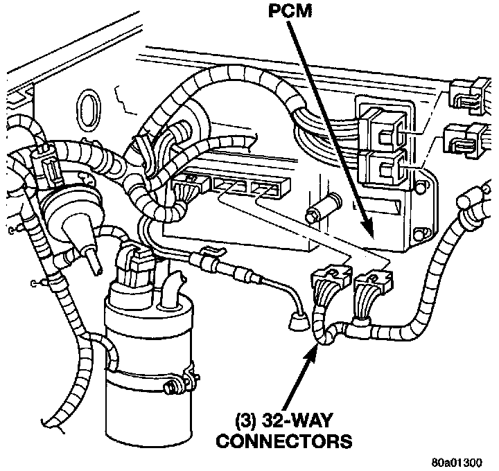
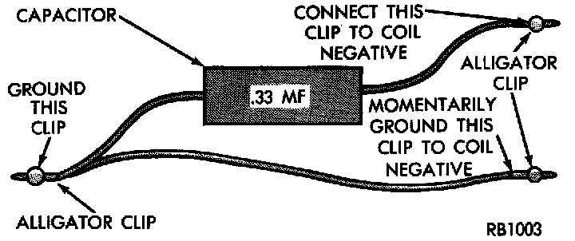

Failure to Start Test
FAILURE TO START TESTNOTE: To prevent unnecessary diagnostic time and wrong test results, the Testing For Spark At Coil test should be performed prior to this test.
WARNING: Set parking brake or block the drive wheels before proceeding with this test.
1. Unplug the ignition coil harness connector at the coil.
2. Connect a set of small jumper wires (18 gauge or smaller) between the disconnected harness terminals and the ignition coil terminals.
3. Attach one lead of a voltmeter to the positive (12 volt) jumper wire. Attach the negative side of voltmeter to a good ground. Determine that sufficient battery voltage (12.4 volts) is present for the starting and ignition systems.
4. Determine that sufficient battery voltage (12.4 volts) is present for the starting and ignition systems.
5. Crank the engine for 5 seconds while monitoring the voltage at the coil positive terminal:
- If the voltage remains near zero during the entire period of cranking, refer to Powertrain Management/Computers and Control Systems/Testing and Inspection. Testing and Inspection
- Check the Powertrain Control Module (PCM) and auto shutdown relay.
- If voltage is at or near battery voltage and drops to zero after 1-2 seconds of cranking, check the powertrain control module circuit. Refer to Powertrain Management/Computers and Control Systems/Testing and Inspection.
Fig. 8 PCM & Three 32-Way Connectors:

- If voltage remains at or near battery voltage during the entire 5 seconds, turn the key off. Remove the three 32-way connectors (Fig. 8) from the PCM. Check 32-way connectors for any spread terminals or corrosion.
6. Remove test lead from the coil positive terminal. Connect an 18 gauge jumper wire between the battery positive terminal and the coil positive terminal.
Fig. 9 Special Jumper Ground-to-Coil Negative Terminal:

7. Make the special jumper shown in (Fig. 9). Using the jumper, momentarily ground the ignition coil driver circuit at the PCM connector (cavity A-7). For cavity/terminal location of this circuit, refer to Diagrams/Electrical. A spark should be generated at the coil cable when the ground is removed.
8. If spark is generated, replace the PCM.
9. If spark is not seen, use the special jumper to ground the coil negative terminal directly.
10. If spark is produced, repair wiring harness for an open condition.
11. If spark is not produced, replace the ignition coil.